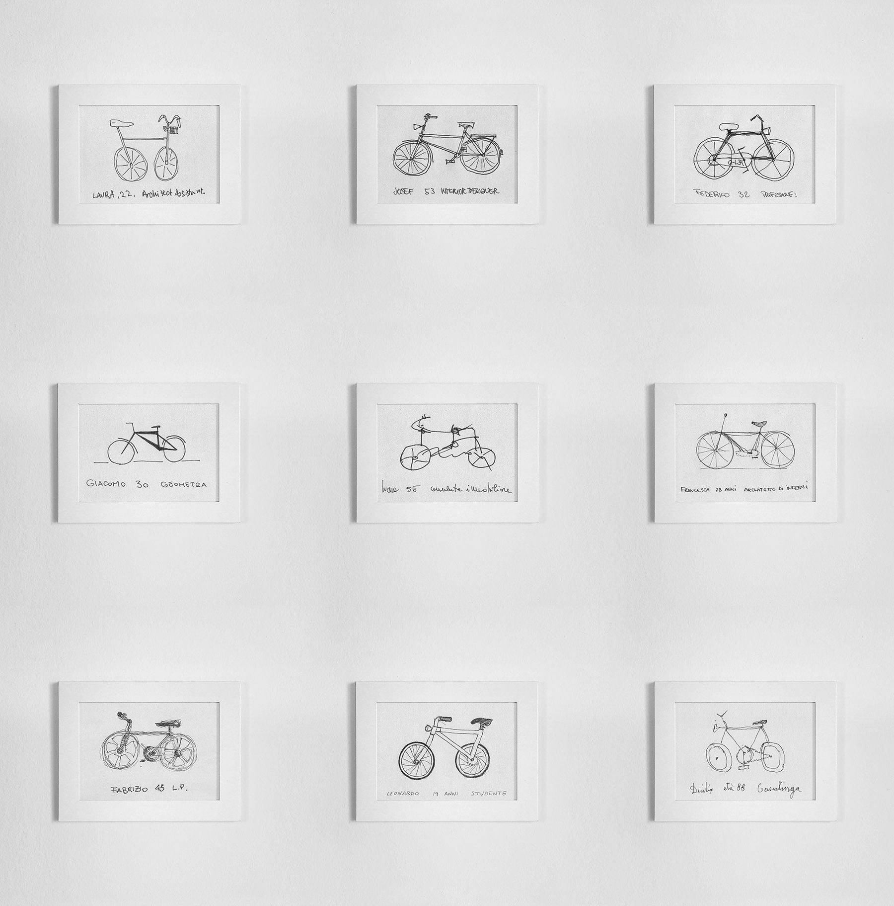
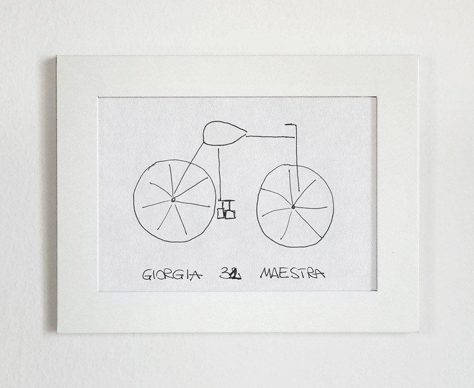
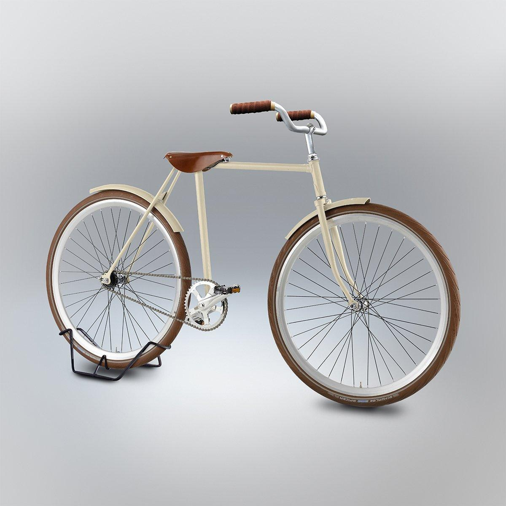
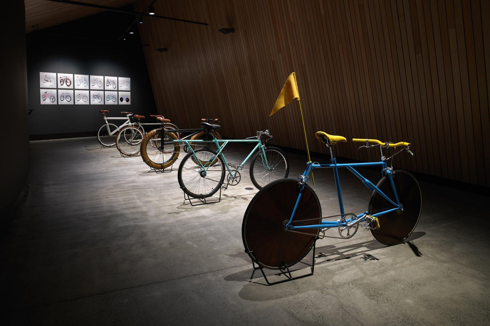

Since the 1970’s there has been a major movement to shift the focus on design away from the designer and towards those who are being designed for. This was of-course borne from the need to create better designs for the people that needed to use them, and from designers increasingly understanding and acknowledging that they couldn’t always understand the needs of users as well as they thought they could. This is especially true as globalization swept the design world, and designers sitting in one country could be designing for users half a world away.
The participatory design methods that grew in Scandinavia in the 1970s held promise in that regard. They invited stakeholders to the table to articulate what they wanted in their designs. [Bodker 1996] These participatory methods however, were often in conflict with one of the designer’s most important tools: the prototype. Prototyping was often seen as an integral part of the design process. From simple, descriptive mock-ups to complex engineering samples. These allowed designers to test assumptions and examine the feasibility of artifacts and interventions at a small scale, without the need to invest in, build and deploy those artifacts and interventions. Testing these prototypes also gave a way for designers to obtain feedback from users through testing.
Participatory design methods often point to the "blank slate" as a way to engage with communities and limit the influence that designers have on the design. [Condon 2008] The goal here is to remove biases that the designer may impose on the participatory design process. From a design standpoint, the lack of an existing form opens up new possibilities and challenges. And from a social side, it symbolizes the authority of the participants in the design process, ceding the designer’s authority over a community.
But, on the flip side speculative designers often point to how objects and artifacts can help us better understand and interpret complex scenarios. The goal here is to critique the state of current design as well as policies around design and open up speculation around different possibilities, both for present designs as well as possible futures. Where Dunne and Raby [2013] use prototypes and objects to create ideas and imagined futures. Wakkary et all [2015] expands this to the concept of material speculation using situated everyday objects as a method of critical inquiry, Wensveen and Mathews [2014] take this approach a step further and propose the use of "Provotypes", i.e. prototypes that provoke reactions and insights as a way to re-examine the values that may be taken for granted. They propose that this form of prototyping could be used as a form of inquiry or as a research method by itself. These objects and methods help re-orient the design process to be more critical of what is being designed.
Oftentimes, people may be limited in their exposure to new technologies and forms. The famous slogan of "faster horses" is often repeated as a maxim when it comes to lack of user research. For most people, being able to articulate what makes one design or one option preferable to another can be difficult, especially when working with objects that don’t yet exist. A/B testing, while problematic in it’s own right, has become a widely used tool, because it allows for users to easily point to one option over another as a "preference".
Traditional designers will often point to the technical challenges of adapting user generated designs into real working, mass produce able designs. There is a whole field of "design for manufacture" that acts as a bridge between the concepts and prototypes that emerge from the design process and the engineering and technical processes that are needed to mass produce an object. From material science to manufacturing processes, to costing and value engineering. For architecture and built environments, this encompasses structural engineering, electrical engineering and again, material science and manufacturing. And today’s design process increasingly relies on computer generated simulations to reduce the cost of manufacturing and testing large numbers of prototypes. These are obviously beyond the scope of participatory methods as they require immense technical skills.
Here, the Velocipedia Project by Gianluca Gimini may be useful to examine, as it combines both elements: participatory design through a blank slate, which is then converted into tangible, realistic (albeit digital) artifacts. Since 2009, the designer has been asking friends and strangers to draw a men’s bicycle. The bicycle is an incredibly common object across the world. And yet many weren’t able to recall the actual shape of a bicycle frame. These rough sketches of bicycles were then converted into photo-realistic renderings, much like a regular designer’s sketches would be.



These bicycles may not be functional in any way, and designers and engineers might be quick to argue that these are not optimized when compared to the traditional metrics by which mass produced bicycles are measured (weight, manufacturing cost, ergonomics, etc.). But they also provide us a glimpse into what people remember. In transforming these into photorealistic renderings, they could act as jumping off points for new ways to imagine bicycle structures that designers might not have previously considered.
The project eventually evolved into Velocipedia IRL [2019], an exhibition that showcased five real bicycles manufactured by this process at the Museum of Old and New in Australia. These real artifacts can also help designers understand the semiology of objects and help better understand how people interpret the objects and artifacts that are designed / to be redesigned. Often these kinds of "interpretations" of objects that users come up with are lost as designers get stuck in the weeds of technical details and complexity in bringing designs to fruition.

The job of the user is obviously never to replace the designer. It would be ludicrous to ask users to learn technical intricacies and form language when even most designers today delegate those aspects to technical designers, "studio teams" and engineers.
Perhaps the ideal is a middle ground, a kind of sketch that encourages new thoughts and possibilities, but at the same time leaves the specifics of any design intervention open to intervention. Or maybe the inverse, prototypes that focus on the specifics, but leave larger ethical questions such as ownership and appropriation in the hands of the users.
In fact, it may be better to think of participatory design and material speculation as different parts of the same process. Where participatory design might be used to allow users to design their ideal experience, prototyping can help better define and craft the tangible touchpoints that make up that experience.
Bodker. (1996). Creating Conditions for Participation: Conflicts and Resources in Systems Development. Human-Computer Interaction, 11(3), 215–236. https://doi.org/10.1207/s15327051hci1103_2
Condon. (2008). Design charrettes for sustainable communities. Island Press.
Dunne, A., & Raby, F. (2013). Speculative everything: design, fiction, and social dreaming. MIT press.
Wakkary, R., Odom, W., Hauser, S., Hertz, G., & Lin, H. (2015, August). Material speculation: Actual artifacts for critical inquiry. In Proceedings of The Fifth Decennial Aarhus Conference on Critical Alternatives (pp. 97-108).
Wensveen, S., & Matthews, B. (2014). Prototypes and prototyping in design research. In The routledge companion to design research (pp. 262-276). Routledge.
Gianluca Gimini [2016] Velocipedia https://www.gianlucagimini.it/portfolio-item/velocipedia/
Gianluca Gimini [2019] Velocipedia IRL https://www.gianlucagimini.it/portfolio-item/velocipedia-irl/